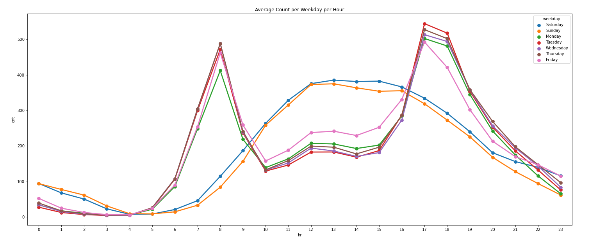
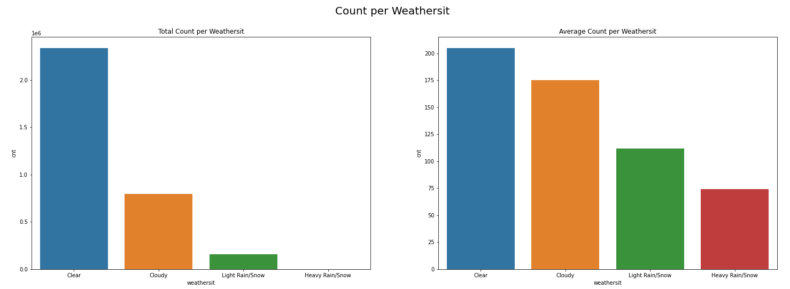

People in Washington D.C. more likely rent a bike when the feels-like-temperature is Warm (20-30 Celcius degree).

Bike rent in Weekdays (Monday - Friday) have peak hour in 8 and 17 because it used to go to work and to go home from work.
Otherwise in Weekends (Saturday and Sunday), bike rent have peak hour in 13 because it mostly used to recreation.

People in Washington D.C. mostly rent a bike where Weathersit is Clear. With average 205 bike per hour.
Summer Season have a highest temperature in a year and have the highest number of bike rent among all season with average 236 bike per hour.
Number of bike rent in 2012 have more number than in 2011. This indicate number of bike rent is growing 64.87% from 2011 to 2012.